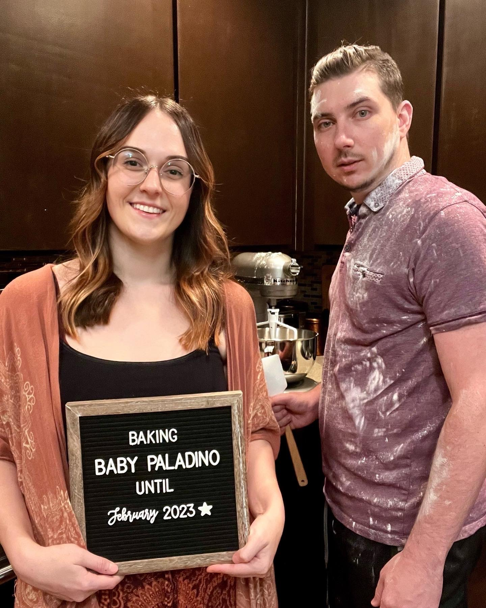
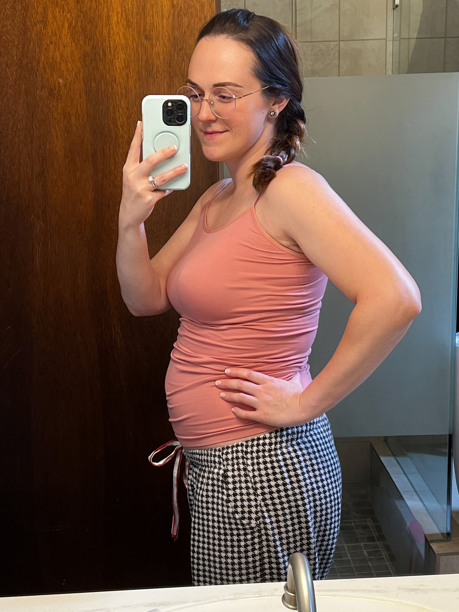

I’m pregnant! (first trimester recap)
It’s true!!! I am pregnant and expecting a baby in February 2023!! I couldn’t be more excited to step into this role that I’ve always hoped for one day.
To be honest, I’ve always had in the back of my head that I’d have complications with conceiving, given my history with eating disorders and amenorrhea at a young age. But doctors reassured me that the female body will heal through healthy decisions and minimizing stress, and they were right! After stopping my 8-year birth control use, cutting out cycling and just doing yoga (a recommendation I recurringly saw online from other women who conceived after amenorrhea), I conceived in a short 5 months. I still can’t believe it!
As I write this, I am in week 14 of this pregnancy (officially second trimester)!
My energy is returning and I no longer need to take a daily 2-3 hour nap on top of my 9-10 hours of sleep at night, hallelujah! I had to stop baking macarons entirely during the first trimester because I had no time in the day after my other work got done.
I’m also able to eat most foods again. In the first trimester, I had an aversion to what seemed like….everything. Weeks 5-7 were the worst, and I mainly remember begrudgingly putting down saltines and protein shakes to quell the nausea. But from then on, things slowly got easier and easier - to where now, I can handle most foods! This brings me much joy, because I love. food. An interesting side effect I’ve still got, though, is that I can’t stomach sweets unless it’s fruit. My brain may say I want cake but my stomach & body will not be happy. Sooo, that’s a conundrum for a sweets lover & professional macaron baker like myself. It’s also just weird!!
I think overall I have had a VERY easy pregnancy so far. I am really hoping things stay this great! I have so much support around me, and I feel like I have at least one different person checking in on me every day; so, that makes me feel very supported in this. Sometimes its great just to get out whatever thoughts and vent whatever you didn’t even realize was going on. I had a hard time the first few weeks when we were still keeping it a secret (we had planned to wait until second trimester but I couldn’t hold it any longer), and I honestly think we should have told friends and family once we found out. I felt very lonely keeping this secret from people and not having any support. Once we shared we news with people, everything got exponentially easier.
On top of amazingly supportive friends and family, I’ve also got a really awesome doula duo to support me through this, and my midwives are also so supportive. Not to mention my therapist that I’ve been seeing for over a year now!
The hardest parts now are finding clothes that I feel comfortable in with this growing bump, so this weekend I went and bought a couple dresses and outfits that I feel comfortable and cute in. Also, the fact that things seem to be constantly changing is just a tough thing for me in general (and I think for most people?). I’m such a creature of habit and I really like my routines, but now there’s a challenge of constantly adapting. I like to think being a small business owner has best prepared me with that aspect, though. But like, having to deprioritize some parts of my business periodically for the sake of pregnancy has been a new challenge that I’m still figuring out how to navigate and cope with on a daily basis. And lastly, I feel like you can’t do anything fun when you’re pregnant! We went rock climbing this past weekend for a friend’s birthday party, and I sat out to play it safe because of mixed recommendations online. We also used to do indoor skydiving, but that’s out of the picture. No six flags rides. Just a few examples that have come up for me; I am still trying to figure out how to shift ways to have fun.
I plan to continue to update as things go along :) Until then-
Sweet regards,
Kim

